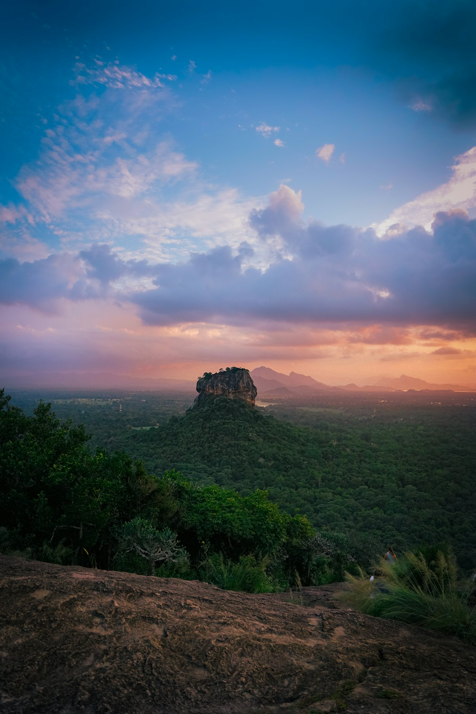
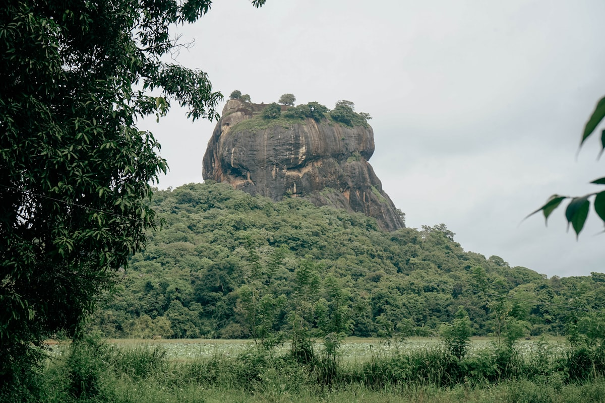
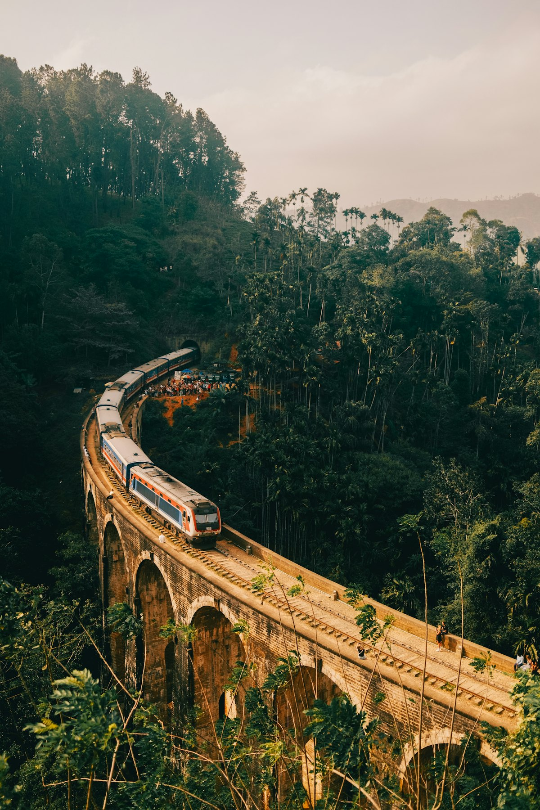
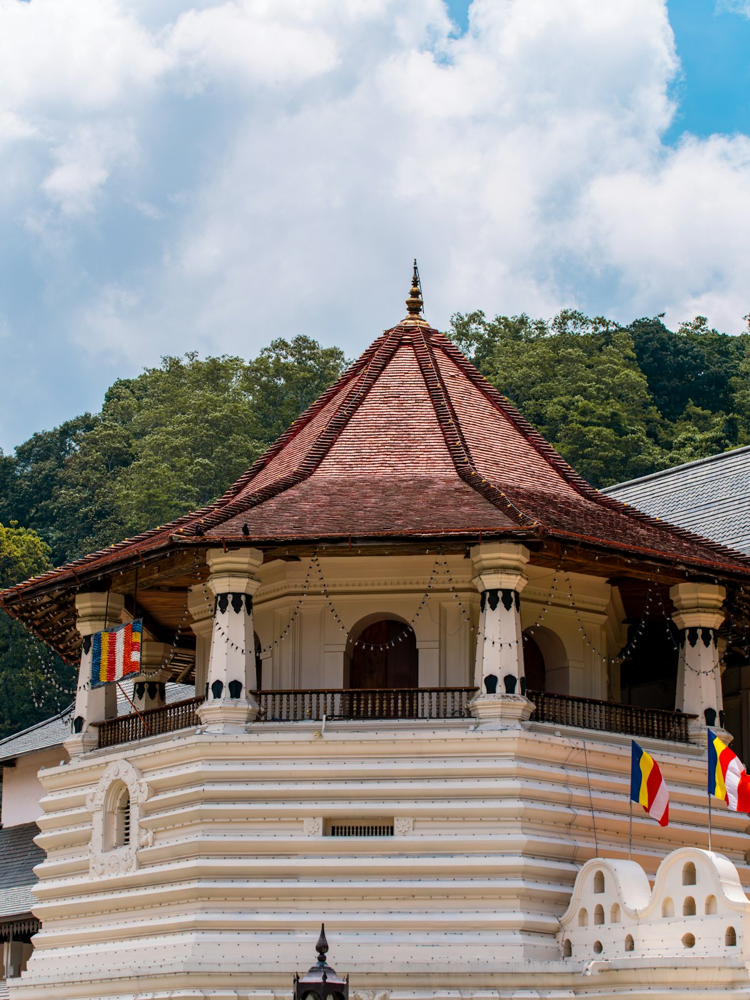
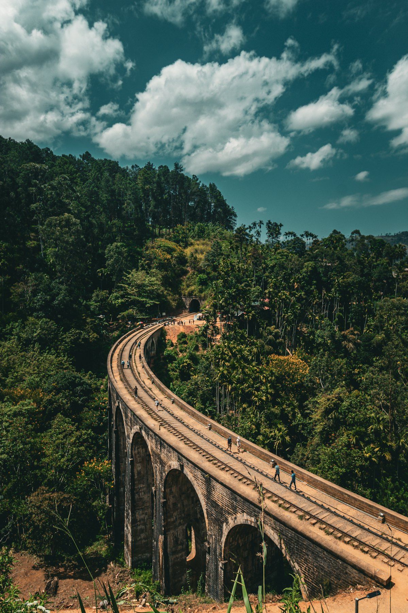
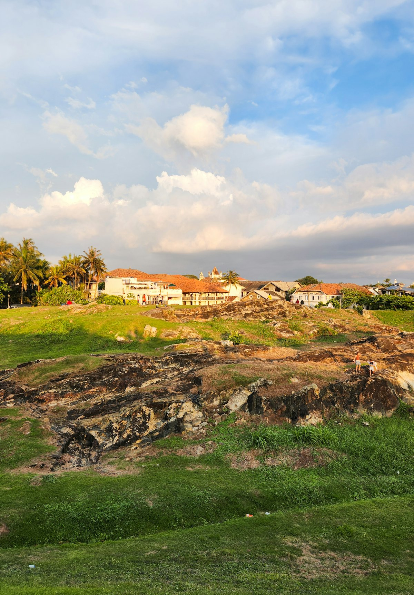
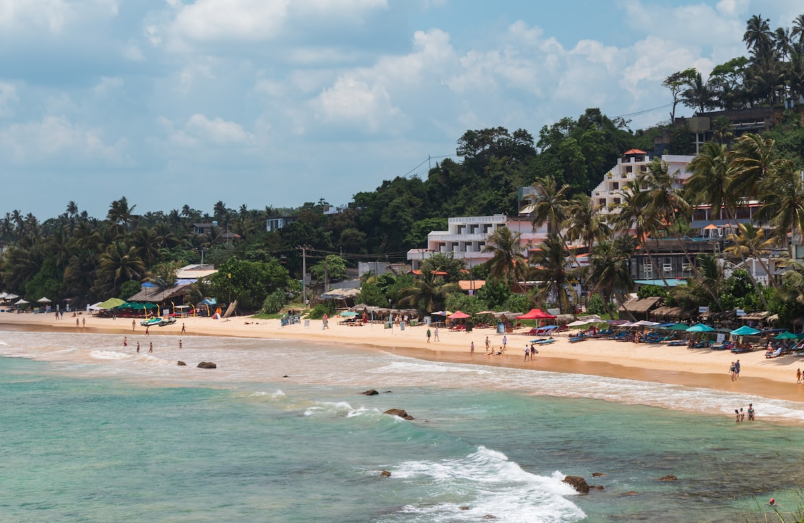
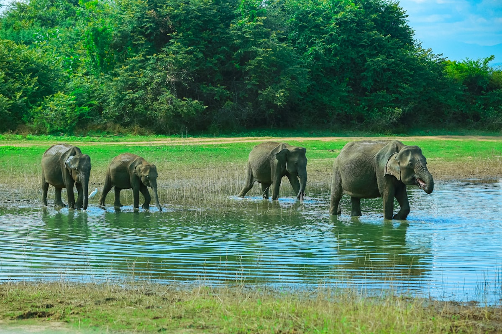

| 事项 | 结论 |
|---|---|
| 事项 | 结论 |
| 签证（2026 新政） | 自 2026-05-25 起，中国护照 ETA 免签费（30 天、双次入境）；仍需在 eta.gov.lk 提前在线申请，落地前打印/留存确认单 |
| 推荐方案 | 尼甘布 2 天 + 锡吉里耶 2 天 + 康提 2 天 + 努沃勒埃利耶 2 天 + 埃拉 + 雅拉/美蕊沙 2 天 + 加勒 2 天 |
| 返程约束 | 第 12 天从加勒回科伦坡，当晚或次日返京；周日/周二首都航空、斯航多班直飞 |
| 行程链 | 科伦坡 → 尼甘布 → 锡吉里耶 → 康提 → 努沃勒埃利耶 → 埃拉 → 雅拉/美蕊沙 → 加勒 → 科伦坡 |
| 预算（人均） | 经济 6000–9000 ／ 标准 10000–15000 ／ 舒适 22000–32000（人民币，北京出发） |
| 三件提前事 | ① 申请 ETA（免费，提前 2–3 周）② 订高山茶园火车票（提前 30 天开放预售）③ 旺季（12–3 月）住宿提前 2–4 周订 |
| 季节提醒 | 12 月–3 月西南部干季最佳（观鲸/雅拉/海滩全开）；2 月最稳；5–9 月西南季风、观鲸停航，可改东岸 |
| 支付 | 现金卢比为主 + Visa/Master 卡（大店/酒店）；美元也收但找零坑，机场换小额卢比应急 |
以下为 12 天 11 晚的推荐节奏：顺时针小环线，先中央高地再南下海岸，避免回头路。每日主景点 ≤2 个，全程以「包车 + 高山火车」组合衔接。
| 日期 | 行程 | 过夜地 | 主题 |
|---|---|---|---|
| D1 抵科伦坡 | 北京✈科伦坡（直飞约 8h），入境后 40 分钟到尼甘布，荷兰运河日落 + 海鲜晚餐 | 尼甘布 | 抵达+预热 |
| D2 | 尼甘布鱼市日出 → 圣玛丽教堂 → 荷兰运河游船 → 海滩休整 | 尼甘布 | 渔港烟火 |
| D3 | 包车 4h 到锡吉里耶，下午爬皮杜兰加拉岩看狮子岩全景日落 | 锡吉里耶 | 文化三角 |
| D4 | 狮子岩清晨登顶 → 博物馆 → 下午丹布勒石窟寺 | 锡吉里耶 | 狮子岩日 |
| D5 | 包车到康提，下午佛牙寺 + 康提湖夜景法事 | 康提 | 佛国圣城 |
| D6 | 佩拉德尼亚皇家植物园 → 康提湖环湖 → 康提舞表演 | 康提 | 圣城深度 |
| D7 | 包车进山：茶园茶厂 → 努沃勒埃利耶粉红邮局 → 格雷戈里湖 | 努沃勒埃利耶 | 英伦茶乡 |
| D8 | 纳努奥亚站乘高山茶园火车到埃拉（挂门体验），下午小镇漫步 | 埃拉 | 高山火车日 |
| D9 | 小亚当峰日出 → 九拱桥 → 拉瓦纳瀑布 | 埃拉 | 山地徒步 |
| D10 | 包车南下：雅拉国家公园 Safari 半日 或 直达美蕊沙海滩 | 美蕊沙 | 野性海岸 |
| D11 | 美蕊沙清晨观鲸（11–4 月季）→ 海滩游泳冲浪 → 椰林日落 | 美蕊沙 | 观鲸海滩 |
| D12 返程 | 加勒古堡半日（灯塔/城墙/荷兰教堂）→ 高跷渔夫 → 回科伦坡晚班机返京 | — | 古堡收尾 |
以下为 12 天全程的逐小时执行时间线，可当作「当天打开照着走」的清单。标注 ※ 的可选项视体力与天气取舍。
| 时间 | 事项 |
|---|---|
| 07:30–14:00 | 北京大兴/首都✈科伦坡班达拉奈克国际机场（斯航 UL869 / 首都航空 JD487 直飞约 7.5–8.5h，每周多班） |
| 14:30–16:30 | 入境（提前申请好 ETA，中国护照免签费）、换汇（机场汇率一般，只换应急小额）、办本地 SIM 卡（Dialog 30 天流量卡约 50 元） |
| 16:30–18:00 | 包车/出租车 40 分钟到尼甘布，入住 Lewis Place 沿线民宿，日落前到荷兰运河散步 |
| 18:30–20:00 | 尼甘布海鲜晚餐（石斑/螃蟹/虾，人均 60–100 元），早休息倒时差（时差 -2h30min） |
| 时间 | 事项 |
|---|---|
| 05:00–07:30 | 尼甘布鱼市（Negombo Fish Market）（免费）：清晨渔船卸货最热闹，晾鱼木架与讨价还价超好拍 |
| 08:00–09:30 | 圣玛丽教堂（免费）：尼甘布最大教堂，蓝白配色与彩绘穹顶 |
| 10:00–12:00 | 荷兰运河游船（约 40 元/人）：小艇穿行渔村水道与红树林，看鸬鹚和水蜥蜴 |
| 12:00–14:00 | 海鲜午餐（尼甘布以渔获闻名，咖喱螃蟹、烤虾拼盘），午后酒店泳池或海滩休整 |
| 16:00–18:00 | 尼甘布海滩散步，突突车逛小镇（荷兰要塞遗址），买金椰子（约 3 元/个） |
| 19:00 | 晚餐：兰卡咖喱自助（rice & curry，人均 50–70 元），早睡准备次日赶路 |
| 时间 | 事项 |
|---|---|
| 07:00 | 退房，包车出发（约 4h，走中央高速+乡道），途中丹布勒午餐 |
| 11:30–13:00 | 丹布勒镇上吃斯里兰卡午餐（kottu roti 炒饼，人均 30 元），休息片刻 |
| 13:30–15:00 | 入住锡吉里耶民宿（多数带稻田景观与泳池），避正午暴晒 |
| 15:30–18:00 | 皮杜兰加拉岩（Pidurangala）（约 22 元）：攀岩 20–30 分钟，岩顶看狮子岩全景 + 平原日落，机位比狮子岩更出片 |
| 18:30 | 晚餐：民宿家常咖喱，早休息准备次日早起登狮子岩 |
| 时间 | 事项 |
|---|---|
| 05:30–08:30 | 锡吉里耶狮子岩（约 250 元，含博物馆）：清晨开园即登，水花园 → 镜墙 → 天女壁画 → 狮爪门 → 1200 级台阶登顶，8 点前光线最好、人最少 |
| 08:30–09:30 | 锡吉里耶博物馆（含在门票内）：了解狮子岩考古发现与壁画临摹 |
| 10:00–12:00 | 回民宿早餐/补觉，避正午暴晒 |
| 13:00–14:30 | 午餐后出发 丹布勒石窟寺（约 45 元）：五座石窟、150 尊佛像与 2100㎡ 彩绘顶棚，世界文化遗产 |
| 15:00–17:00 | 丹布勒石窟脱鞋参观，金佛寺大佛塔俯瞰平原 |
| 18:30 | 晚餐后休息，次日转场康提 |
| 时间 | 事项 |
|---|---|
| 08:00 | 包车前往康提（约 2.5–3h 山路），沿途香料园/木雕店可顺逛 |
| 11:30–13:00 | 入住康提湖畔酒店，午餐（康提咖喱 rice & curry 自助） |
| 14:30–17:30 | 佛牙寺（Sri Dalada Maligawa）（约 67 元）：供奉佛牙舍利的世界遗产，木质殿堂、金饰佛塔，可入殿供花祈福 |
| 18:00–19:30 | 佛牙寺傍晚供奉仪式（每日 18:30 鼓乐法事），康提湖绕湖夜景散步 |
| 20:00 | 晚餐：湖畔餐厅看湖景，早休息 |
| 时间 | 事项 |
|---|---|
| 08:00–11:00 | 佩拉德尼亚皇家植物园（约 45 元）：亚洲顶级植物园，皇家棕榈大道、巨型爪哇榕、兰花房与香料园，距康提 6 公里坐突突 20 分钟 |
| 11:30–13:00 | 植物园门口午餐，返回康提市区 |
| 14:00–16:00 | 康提湖环湖（免费）+ 佛牙寺外围城墙，逛康提艺术与工艺市场（木雕/面具/蓝宝石店） |
| 16:30–18:00 | 康提舞表演（约 45 元/场）：鼓乐、火舞与面具舞，斯里兰卡国粹 |
| 18:30 | 晚餐：康提市中心咖喱或烤鸡，早休息次日进山 |
| 时间 | 事项 |
|---|---|
| 08:00 | 包车进山（约 3–3.5h 山路，海拔一路爬升，凉爽渐至） |
| 09:30–11:30 | 途中茶园茶厂（Labookellie / Mackwoods）：参观红茶制程、免费品茶，丘陵茶田随手大片 |
| 12:30–14:00 | 抵达努沃勒埃利耶（海拔 1890m），午餐：英式下午茶或山间咖喱 |
| 14:30–16:00 | 粉红邮局（Nuwara Eliya Post Office）（免费）：百年红砖英式邮局，寄张明信片回国 |
| 16:00–17:30 | 格雷戈里湖（免费）：湖边骑行或划船，远山湖景 |
| 18:30 | 晚餐后早休息，山区夜凉（15°C 左右），备薄外套 |
| 时间 | 事项 |
|---|---|
| 07:00 | 包车 30–40 分钟到 纳努奥亚站（Nanu Oya）（如 Ambewela 站已通则更近） |
| 08:30–12:30 | 高山茶园火车（纳努奥亚 → 埃拉，二等/三等约 10–30 元）：茶田云海、瀑布溪流、螺旋铁轨，挂门体验是精髓 |
| 12:30–14:00 | 抵达埃拉小镇，入住山景民宿，午餐（埃拉西式/斯里兰卡混合小馆） |
| 15:00–17:00 | 埃拉镇漫步：主街咖啡馆、市场，预订次日小亚当峰徒步向导（可选） |
| 18:00 | 山景晚餐，埃拉夜生活丰富，精酿啤酒配日落 |
| 时间 | 事项 |
|---|---|
| 05:30–07:30 | 小亚当峰（Little Adam's Peak）（免费）：40 分钟登顶，晨雾中的茶山与云雾日出 |
| 08:00–09:00 | 早餐后收拾 |
| 09:30–11:30 | 九拱桥（Nine Arch Bridge）（免费）：峡谷之上的英殖民铁路桥，算好列车时刻（上午 9–11 点有班次）拍火车过桥 |
| 12:00–13:30 | 午餐：埃拉主街（山景餐厅/炒饭） |
| 14:00–16:30 | 拉瓦纳瀑布（免费）戏水；体力好可加埃拉岩（Ella Rock）徒步 2h（往返 3–4h，视体力取舍） |
| 17:30 | 埃拉观景台或主街咖啡馆看日落，晚餐 |
| 时间 | 事项 |
|---|---|
| 07:00 | 包车南下（约 3.5–4h 到雅拉入口，4.5–5h 直达美蕊沙），中途休息站补给 |
| 11:30–13:00 | 雅拉入口小镇（蒂瑟默哈拉默）午餐 |
| 14:00–18:00 | 雅拉国家公园 Safari 半日（门票约 180 元 + 吉普车半天 6 人拼车人均约 100–150 元）：锡兰豹、大象、鳄鱼、孔雀，运气好见到豹子 |
| 19:00 | Safari 结束后驱车 1.5–2h 到美蕊沙，入住海滩民宿，海鲜晚餐 |
| 时间 | 事项 |
|---|---|
| 05:30–09:30 | 美蕊沙观鲸（拼船约 250–470 元/人，旺季 12–3 月成功率 90%+）：蓝鲸、抹香鲸与海豚群，船上含早餐 |
| 09:30–11:00 | 回港补觉/民宿早餐 |
| 11:30–17:00 | 美蕊沙海滩（免费）：游泳、冲浪（租板约 30 元/天）、椰林吊床，海滩餐厅喝椰汁 |
| 17:00–18:30 | 椰林观景台看印度洋日落 |
| 19:00 | 海鲜晚餐：龙虾/螃蟹/烤鱼（人均 100–150 元），海滩夜生活 |
| 时间 | 事项 |
|---|---|
| 07:30 | 退房，沿西海岸北上（美蕊沙 → 加勒约 35 公里，1h） |
| 09:00–12:00 | 加勒古堡（Galle Fort）（免费）：16 世纪荷兰殖民堡垒，灯塔、城墙炮台、荷兰教堂、小巷咖啡馆，世界遗产 |
| 12:00–13:00 | 古堡内午餐（海景餐厅/咖喱） |
| 13:30–15:00 | 高跷渔夫（科加拉近海，付费拍照约 30–60 元）：斯里兰卡标志性画面 |
| 15:30–18:00 | 返科伦坡（约 2.5–3h），加勒菲斯绿地海边散步/商场补货 |
| 21:00–次日 | 科伦坡✈北京晚班机（斯航 UL868 夜间返，次日清晨抵京），或次日早班返程 |
必去（必去）/ 顺路（顺路）/ 可跳过（可跳过）。

必去
必去
必去
必去
必去
必去
顺路图片为 Unsplash 主题图（狮子岩、高山茶园火车、佛牙寺、九拱桥、加勒古堡、美蕊沙海滩等均为斯里兰卡实景），用于页面配图。更多免费景点：尼甘布鱼市、康提湖、格雷戈里湖、小亚当峰、拉瓦纳瀑布。
点击左侧节点可在地图上定位；点击地图 marker 会高亮对应节点。坐标为 WGS-84 转 GCJ-02 纠偏后标注。
以下为单人、不含购物的估算，人民币计价；出发地基准北京。汇率按 1 人民币 ≈ 45 斯里兰卡卢比（约 US$1 ≈ 7.2 元）估算。往返机票按斯航/首都航空直飞 4500–6500 元计，转机可再省 1000 元。
| 项目 | 经济（6000–9000） | 标准（10000–15000） | 舒适（22000–32000） |
|---|---|---|---|
| 往返机票 | 转机 3200–4000 / 直飞特价 4500 | 直飞 5000–6500 | 直飞+灵活时段 7000–10000 |
| 住宿（11 晚） | 民宿客栈 130–220/晚 | 精品民宿/中档酒店 300–550/晚 | 度假村/古堡酒店 1200–2200/晚 |
| 交通 | 大巴+火车+突突 600–900 | 拼包车+高山火车 1500–2200 | 全程包车+专车 4000–6000 |
| 门票 | 狮子岩+佛牙寺等 600–900 | 含雅拉 Safari 拼车 1300–1800 | 全含+私享吉普 3000–4500 |
| 餐饮（12 天） | 街头咖喱+水果 900–1400 | 正常下馆子 1800–2600 | 海鲜大餐+度假村餐饮 5000–8000 |
带娃推荐：砍掉雅拉 Safari（早起+颠簸），把 2 天给美蕊沙海滩和加勒古堡，锡吉里耶留半天在民宿泳池；高山火车选二等车厢坐着更舒服，挂门只让孩子在停靠时体验。斯里兰卡热带午后炎热，行程节奏放缓，每天 1 个景点 + 半天泳池最合适。
5–9 月西南季风期，美蕊沙观鲸停航、西南岸多雨，推荐把南部 3 天换成东岸：埃拉 → 蒂瑟默哈拉默 → 亭可马里（鸽岛潜水、沙洲海岸）或阿鲁加姆湾（冲浪天堂），观鲸可改到亭可马里（抹香鲸）。雅拉公园旱季在 2–6 月，雨季也能去但动物密度略低。
| 方式 | 时长 | 参考价 | 备注 |
|---|---|---|---|
| 直飞（推荐） | 北京→科伦坡约 7.5–8.5h | 往返 4500–6500 元 | 斯里兰卡航空 UL869（首都）与首都航空 JD487（大兴，每周二/六） |
| 转机 | 11–16h | 3200–4500 元 | 经吉隆坡/曼谷/新加坡，便宜但中转久 |
| 国际铁路/轮渡 | — | — | 中国到斯里兰卡无陆路，只能飞机 |
| 区域 | 价格/晚 | 优点 | 短板 |
|---|---|---|---|
| 尼甘布·Lewis Place | 经济 130–220 / 标准 300–450 | 近机场（8km），海鲜一流 | 海滩浪大不适合游泳 |
| 锡吉里耶·民宿 | 经济 150–250 / 标准 350–600 | 稻田景观+泳池，近狮子岩 | 村落配套少，需包车 |
| 康提·湖畔 | 经济 150–250 / 标准 350–550 | 圣城核心，夜生活丰富 | 山坡酒店停车/爬坡费劲 |
| 努沃勒埃利耶 | 经济 150–250 / 标准 350–550 | 英伦风情，茶厂咖啡 | 夜间冷（15°C），需外套 |
| 埃拉·山景民宿 | 经济 130–230 / 标准 400–700 | 山谷景观，徒步资源多 | 主街喧闹，旺季一房难求 |
| 美蕊沙/加勒 | 经济 180–300 / 标准 450–800 | 海滩直达，观鲸/冲浪 | 旺季（12–3 月）涨价 30–40% |